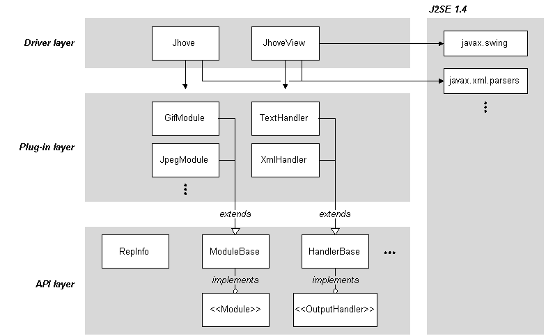

{% include navbar.html %}
{% include navbar.html %}
The concept of representation format, or type, permeates all technical areas of digital repositories. Policy and processing decisions regarding object ingest, storage, access, and preservation are frequently conditioned on a per-format basis. In order to achieve necessary operational efficiencies, repositories need to be able to automate these procedures to the fullest extent possible.
JSTOR and the Harvard University Library are collaborating on a project to develop an extensible framework for format validation: JHOVE (pronounced "jove"), the JSTOR/Harvard Object Validation Environment.
JHOVE provides functions to perform format-specific identification, validation, and characterization of digital objects.
Format validation conformance is determined at two levels: well-formedness and validity.
For example, a TIFF object is well-formed if it starts with an 8 byte header followed by a sequence of Image File Directories (IFDs), each composed of a 2 byte entry count and a series of 8 byte tagged entries. The object is valid if it meets certain additional semantic-level rules, such as that an RGB file must have at least three sample values per pixel.
The set of characteristics reported by JHOVE about a digital object is known as the object's representation information, a concept introduced by the Open Archival Information System (OAIS) reference model [ISO/IEC 14721]. The standard representation information reported by JHOVE includes: file pathname or URI, last modification date, byte size, format, format version, MIME type, format profiles, and optionally, CRC32, MD5, and SHA-1 checksums [CRC32, MD5, SHA-1]. Additional media type-specific representation information is consistent with the NISO Z39.87 Data Dictionary for digital still images and the draft AES metadata standard for digital audio.
Identification, validation, and characterization actions are frequently necessary during routine operation of digital repositories and for digital preservation activities. These actions are performed by modules. The output from JHOVE is controlled by output handlers. JHOVE uses an extensible plug-in architecture; it can be configured at the time of its invocation to include whatever specific format modules and output handlers that are desired. The initial release of JHOVE includes modules for arbitrary byte streams, ASCII and UTF-8 encoded text, GIF, JPEG2000, and JPEG, and TIFF images, AIFF and WAVE audio, PDF, HTML, and XML; and text and XML output handlers.
Potential use cases for JHOVE include:
In terms of the OAIS Reference Model [ISO/IEC 14721], JHOVE can be integrated into repository workflows with respect to Submission Information Package (SIP) creation and ingest validation.
JHOVE is designed as a layered architecture with an API (with well-defined, public interfaces) invoked by a thin application layer for a stand-alone, command line tool, applicable for batch and interactive operation. The API can be used on its own to create other compatible tools.

JHOVE is implemented as a Java application, written to conform to J2SE 1.4, using the Sun SDK 1.4.1. JHOVE should be usable on any Unix, Windows, or OS X platform with an appropriate J2SE installation.
JHOVE can be invoked with two interfaces:
A tutorial on how to use JHOVE is available.
The following standard modules are available:
JHOVE is made available by JSTOR and the President and Fellows of Harvard College under the GNU Lesser General Public License (LGPL).
Note that previous versions of JHOVE were released under the GNU General Public License (GPL).
Development of JHOVE was funded in part by the Andrew W. Mellon Foundation through a grant to JSTOR for the recently launched Electronic-Archiving Initiative.
The JHOVE logo is based on a manipulated three-color filter image of Jupiter and its moon Ganymede (P-20945C, Voyager 1-9, January 31, 1979) produced by the Jet Propulsion Laboratory from images taken by the Voyager 1 spacecraft on January 24, 1979. The original image and caption are made available from NASA by the National Space Science Data Center.
{% include navbar.html %} Copyright 2003-2009 by JSTOR and the President and Fellows of Harvard College. Used by permission.{kind=link}